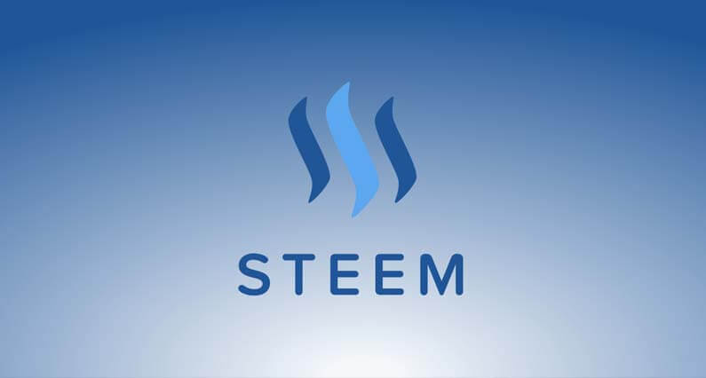
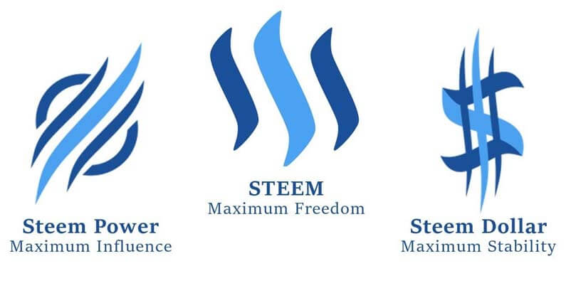

Mi az a STEEM? Útmutató kezdőknek
STEEM a Steemit platform alapvető kriptovalutája amely egy blokkláncra épített közösségi média platform ami ösztönzési rendszert használ. Steemit felhasználók létrehozhatnak és szerkeszthetik a tartalmat csakúgy mint bármely más közösségi média platformon és ezért jutalmat kapnak a munkájukért.
Mi az a Steemit?
Steemit egy közösségi háló amely hasonlít Reddit-hez mind kinézetben, mind funkciókban, azonban van egy alapvető különbség. Steemit fizet mind a tartalom létrehozóknak amikor a munkájuk szavazatot kap mind pedig a felhasználóknak akik szavaznak mások munkájára.
Ezt az teszi lehetővé, hogy a Steemit platform egy új digitális valutára van építve a STEEM-re. A Steem hálózat minden nap új egységeket hoz létre amelyeket szétoszt a felhasználók között, akik ezt akár igazi pénzre is cserélhetik. A platform használata ingyenes.
Steemit működése
Bizonyos szempontból, STEEM hasonló más kriptovalutákhoz. Például lehet vele kereskedni, venni és eladni a piacon csakúgy mint bármely más digitális valutát.
Más kriptopénzeknél mint Bitcoin, az érmék amelyeket létrehoznak minden nap azok között van kiosztva akik egy speciális Bitcoin szoftvert futtatnak a számítógépükön amely úgymond bányássza a Bitcoin-t. A számítógépes teljesítménytől függ, hogy egy ember mennyi pénzt kap.
Steemit-en minden nap új egységeket hoz létre a hálózat amelyet szétoszt azon emberek közt akik aktívan közreműködnek a Steemit weboldalon. Minél aktívabban működik közre valaki annál több pénzt kap.
Felhasználók akik új tartalmat hoznak létre jutalmat kapnak ezért. Felhasználók akik szavaznak ezekre a tartalmakra ugyancsak jutalmat kapnak azért mert segítenek szerkeszteni a minőségi tartalmakat. Hozzászólok akik hozzátesznek a beszélgetéshez ugyancsak jutalmat kapnak.
Steemit három kriptovalutája
Ez a három digitális valuta teszi ki a Steemit ökoszisztémát: STEEM, Steem Power (SP), és Steem Dollar.
STEEM. STEEM az alap valutája a Steemit hálózatnak. STEEM elcserélhető Bitcoin-ra vagy más kriptovalutákra több kriptovaluta váltón keresztül is. Szavazati joghoz azonban STEEM-et el kell cserélni Steem Power (SP)-re. STEEM-et ugyancsak elcserélheted Steem dollárra.
Steem Power (SP). Amikor STEEM-et SP-re cseréled akkor az egyfajta befektetés a hálózatba részvényként. Ezek nem eladhatók 13 hétig (eredetileg 2 év volt) amely célja, hogy meggátolja, hogy az emberek egyszerre eladják egységeiket és tönkretegyék a piacot.
Egy Steem Power token egyenlő egy szavazattal. A legtöbb SP-vel rendelkezőknek van a legnagyobb befolyásuk melyik tartalom kerül az élre. Az újonnan létrehozott STEEM 15%-a megy azoknak a felhasználóknak akik sok SP-t birtokolnak, amely így ösztönzés a résztvevőknek, hogy keresetüket visszafektessék a hálózatba. 10% megy a tanuknak akik üzemeltetik a blokkláncot. A maradék 75% megy az új tartalom létrehozóinak és szavazóknak.
Steem Dollar. Steem Dollars, amelyek értéke megegyezik az USD-vel. Amikor felhasználók létrehoznak egy új és népszerű tartalmat, akkor jutalmuk fele Steem dollár és a másik fele Steem Power. Steem dollárokkal három lehetősége van a felhasználóknak. Átválthatók STEEM-re, amit eladhatnak a nyílt piacon, egyfajta kifizetési lehetőségként. Megtarthatják a Steem Dollárokat és 10% kamatot kaphatnak, vagy elcserélhetik Steem Power-re hosszú távú befektetésként.
STEEM beszerzése
Két féle módon lehet STEEM-hez hozzájutni, vásárolni vagy kiérdemelni. Rengeteg népszerű kriptovaluta váltón beszerezhető mint Binance és Poloniex. STEEM vásárlása a leggyorsabb módja a kriptovaluta beszerzésének. STEEM kiérdemlése pedig a Steemit közösségben való aktív részvétellel lehetséges, új tartalom létrehozásával, hozzászólásokkal. Minél értékesebb a tartalom amit létrehozol annál több STEEM-et kereshetsz.
Záró gondolatok
Steem jutalomban részesíti azokat akik pozitív irányban segítik a közösséget legyen az akár egy jó eredeti tartalom, vagy értelmes hozzászólás amely segít a felhasználóknak. Mivel a Steemit rendszer előnyben részesíti a minőségi tartalmat ez ösztönzőképp hat a résztvevőknek, hogy minőséggel szolgáljanak. Mindenképpen egy nagyon érdekes koncepció amely már most is igen népszerűnek számít több mint 50,000 napi aktív felhasználóval.


2018. Március 09.